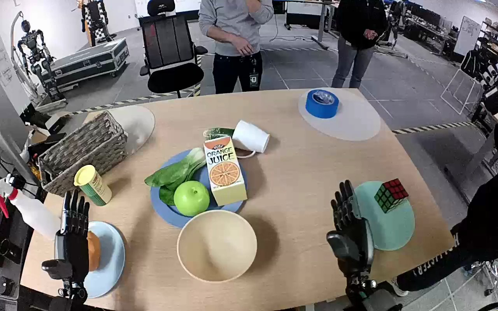

NVIDIA GR1 · 49
Video 49

Visual review action_review.json
{
"prompt_protocol": "humanoid_action_v1",
"prompt_provenance": "visually_authored_from_video_and_initial_frame",
"reviewed_contact_sheets": [
"sheet_001.jpg"
],
"inspected_frame_stride": 2,
"inspected_sampled_frame_count": 60,
"initial_scene": "Egocentric tabletop view with the potato partly behind the open left hand on the small blue plate at lower left; an empty pale yellow bowl is immediately to its right. Both forearms enter from below. The right hand is open beside the mint-colored plate and cube.",
"observed_sequence": [
{
"start_frame": 0,
"end_frame": 36,
"action": "Both hands remain open over the table; the potato stays on the blue plate and the bowl is empty. Minor arm repositioning does not manipulate an object.",
"confidence": "high"
},
{
"start_frame": 37,
"end_frame": 68,
"action": "The left hand moves down and turns toward the potato, spreading its thumb and fingers around opposite sides of the potato on the blue plate. The right hand remains separate.",
"confidence": "high"
},
{
"start_frame": 69,
"end_frame": 80,
"action": "The left fingers close against the potato, establishing a grasp while the potato remains at the blue plate.",
"confidence": "high"
},
{
"start_frame": 81,
"end_frame": 98,
"action": "The left hand lifts the potato clear of the blue plate and carries it rightward to the bowl; the empty blue plate becomes visible. The right hand does not support the object or bowl.",
"confidence": "high"
},
{
"start_frame": 99,
"end_frame": 114,
"action": "Still grasping the potato, the left hand brings it over the bowl and lowers it into the opening.",
"confidence": "high"
},
{
"start_frame": 115,
"end_frame": 119,
"action": "The left fingers open and the potato drops/settles into the bowl. The final frame shows the potato inside the bowl with the left hand open above and beside it.",
"confidence": "high"
}
],
"arm_hand_roles": {
"left": "Sole manipulator: surrounds the potato with thumb and fingers, grasps and lifts it from the blue plate, transports it over the pale yellow bowl, lowers it, and opens to release.",
"right": "Open idle hand beside the mint-colored plate; makes small posture shifts but does not grasp, support, transfer, or stabilize the potato or bowl.",
"coordination": "No two-hand manipulation or human interaction occurs."
},
"anatomical_side_evidence": {
"description": "The generation view is egocentric with the two robot forearms approaching the tabletop from the lower left and lower right. The active hand is continuous with the lower-left forearm. During the grasp its opposed thumb lies on the inward/robot-right side of the fingers, consistent with the anatomical left hand; the other arm remains on the robot-right side. This naming is established from arm placement and hand orientation in the initial PNG and grasp views, rather than from the task caption alone.",
"confidence": "high",
"limitation": "Shoulder attachments and most of the torso are outside the egocentric view."
},
"terminal_state": "The potato has been released inside the pale yellow bowl; the blue source plate is empty. The left hand is open over the bowl and the right hand remains idle near the other plate.",
"uncertainties": [
"The shoulders are outside the field of view; anatomical naming uses the egocentric forearm arrangement and opposed-thumb orientation. No post-release withdrawal or later settling is visible after the final frame."
],
"annotation_discrepancies": [],
"evidence_frame_indices": [
0,
40,
68,
76,
84,
98,
114,
116,
119
],
"selected_execution_status": "success",
"video_id": "49",
"dataset": "NVIDIA_GR1_100",
"dedicated_review_agent": "review_gr1_49",
"review_source_video": "NVIDIA_GR1_100/49/original/original.mp4",
"source_frame_count": 120,
"source_fps": 20.0,
"native_detail_frames": [
40,
68,
76,
84,
98,
114,
116,
119
],
"world_model_prompt": "The robot uses its left hand to grasp the potato on the blue plate, lift it clear, and carry it to the pale yellow bowl. It lowers the potato into the bowl and opens its fingers, leaving the potato inside. Keep the camera fixed; preserve robot geometry, physically valid joint motion, and normal gripper opening and closing.",
"original_task_instruction": "Use the left hand to pick up potato from from the blue plate on the left side of the table to to the yellow bowl.",
"selected_segment": {
"start_frame": 0,
"end_frame_exclusive": 120,
"reason": "Complete original single-task reference; no cropping or trimming requested."
},
"source_video_sha256": "56a8b84e5ba4940a2e968ec5a7f6bd5cfc878bc76d03f81e35712885a47d0fac",
"review_completed_at": "2026-10-13T18:10:43.059963+00:00"
}